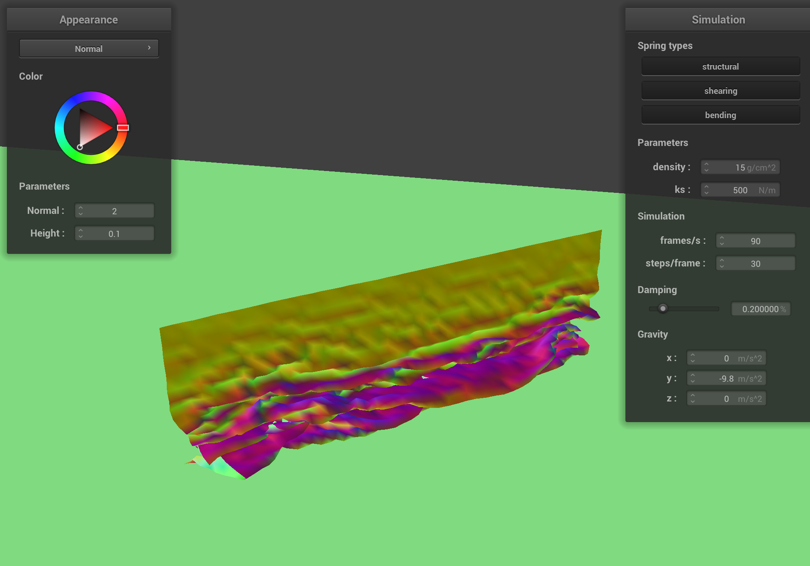
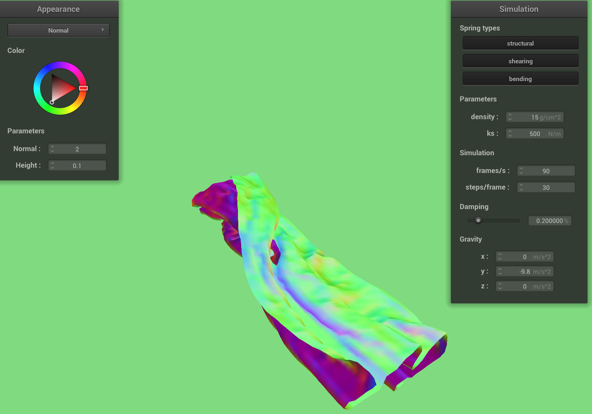
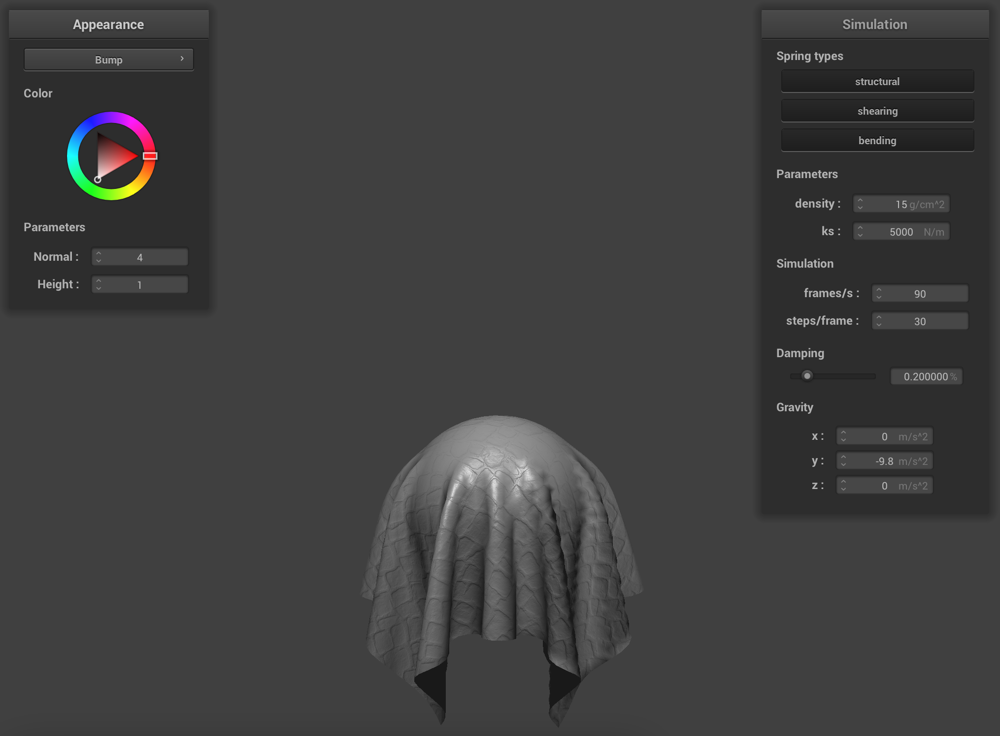
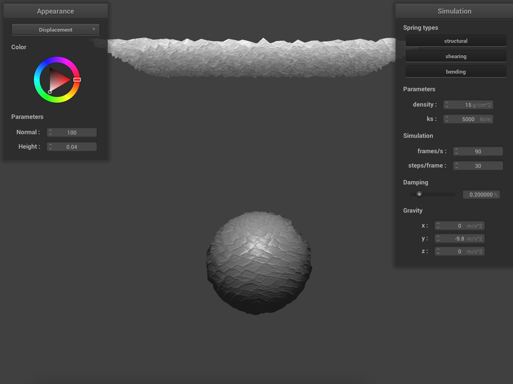
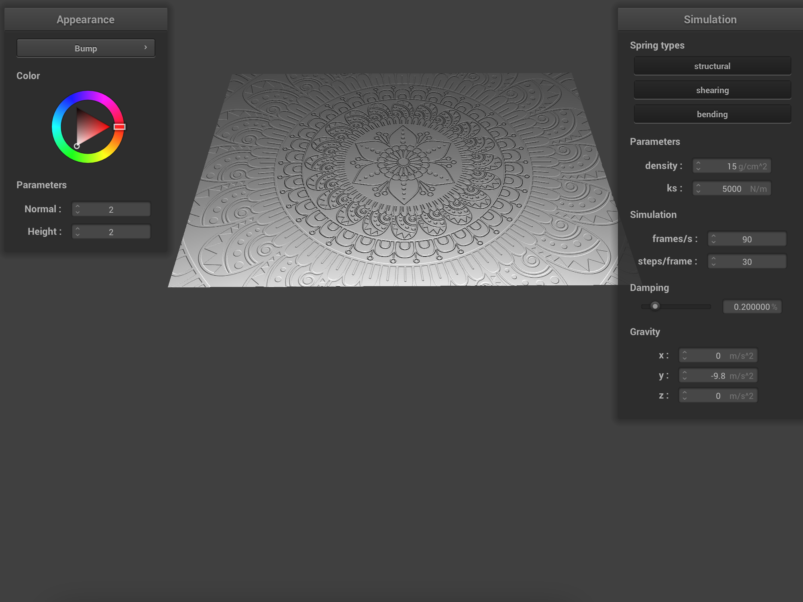

damping = 0.09% (default) |
damping = 0.2% (default) |
damping = 0.35% |

damping = 0.80% |
Give a high-level overview of what you implemented in this project. Think about what you've built as a whole. Share your thoughts on what interesting things you've learned from completing the project.
In this project, I implemented cloth simulation, using physics-based mass and spring system. I simulated different properties of the cloth such as density, spring constant, and damping. I also learned to implement simple shaders using GLSL language for GPU rendering. The masses are represented as point masses which store locations in 3D. Specifically:
Additional details for each part are provided below.
In Part 1, we implement a cloth simulation, using masses and springs. Masses are point masses and springs represent
constraints (structural, shearing, or bending). The cloth is represented by a rectangular grid size num_height_points
rows by num_width_points columns. The cloth can be positioned in either vertical or horizontal
orientation in 3D space. The code that creates masses and springs is independent of orientation. After all masses
are created, we traverse the vector of masses, which contains mass positions. Depending on the orientation, the
cloth spans either the xy plane (vertical), or the xz plane (horizontal). The traversal
happens in the row-major (x-axis) order, independent of the cloth orientation. During the mass creation process, we
check if the mass index is in the pinned array of mass indices. If it is, we set that mass's pinned
property to true. Otherwise, the mass is not pinned.
After the masses are created, we iterate over each mass in the points_masses array and create a spring
between it and another mass, given by the spring rules. The spring rules are as follows:
When creating springs, we check if the mass is on the left-most edge as defined with respect to the 2D grid, made of
masses in the point_masses vector, where the masses are stored in the row-major order. Therefore, if a
mass is on the top edge, along the width dimension, we don't create the spring above it. Similarly, for masses along
the left column-wise edge: we don't create a spring to the left of the masses along that edge. Following the spring
rules described above, we connect the masses with springs in a 2D grid, representing the cloth. The structural
springs are the vertical and horizontal lines between neighboring masses. The shearing springs are the diagonal
lines between neighboring masses. Finally, the bending springs are also the vertical and horizontal lines between
masses that are two masses away from each other. In the images below the structural and bending constraints look
identical.
Take some screenshots of scene/pinned2.json from a viewing angle where you can clearly see the cloth wireframe to show the structure of your point masses and springs.
The image below shows the rest state of the pinned2.json with all constraints turned ON.
pinned2.json - View 1
|
pinned2.json - View 2
|
pinned2.json - View 3
|
Show us what the wireframe looks like (1) without any shearing constraints, (2) with only shearing constraints, and (3) with all constraints.
Images below show pinned2.json (1) without any shearing constraints, (2) with only shearing constraints,
and (3) with all constraints.
|
|
|
|
|
|
First, we compute the external and internal forces on each point mass in the cloth, which we create in Part 1. To
compute the external forces due to gravity, we use the given external_forces vector and apply it to
each point mass using Newton's second law F = m * a. To compute the internal forces due to the
constraints in each spring, we iterate over each spring and compute forces of equal but opposite direction on two
masses on the end of the spring. We check which type of spring constraint it is (structural, shearing, or bending),
and apply Hooke's law to compute the force on the masses due to the spring. Each point mass has a
forces property, in which we store the computed forces.
Second, we use Verlet's integration algorithm to compute new position of each mass, due to the forces computed in the first step. Verlet's algorithm is an explicit integrator, meaning the new position value can be computed from previously known values at each time step.
We use Verlet's numerical integration method to find the new position of each mass. The formula is given by the following (from the project specification):
|
|
We approximate the velocity at time t as the difference in positions at the current time step
t and the previous time step t-1. Additionally, we add damping to the system to simulate
the energy lost to friction, heat, etc. This simplifies the formula to the following:
|
|
The term d is the damping coefficient, between 0 and 1, given as the damping parameter in
the simulation.
We find the acceleration by using all the forces computed earlier and dividing them by the mass, using Newton's second equation again. At the end of each integration step, we reset the forces on each mass, so as not to accumulate errors. We ignore masses that are pinned because their positions don't change during the simulation.
Last, we add another constraint to simulate a more realistic cloth, described in Section 5 of the Deformation Constraints in a Mass-Spring Model to Describe Rigid Cloth Behavior paper by Xavier Provot (SIGGRAPH, 1995). This constraint approximates the additional forces that a real cloth has from non-elastic properties of fabrics. The constraint limits the maximum deformation each spring can undergo due to all the forces and caps it at 10% of the spring's rest length. This corrects for unrealistic super-elongated strings that occur in springs connected to a pinned mass.
Image below shows the simulation of pinned2.json with default parameters (ks = 5000).
pinned2.json in rest state |
Experiment with some the parameters in the simulation. To do so, pause the simulation at the start with P, modify the values of interest, and then resume by pressing P again. You can also restart the simulation at any time from the cloth's starting position by pressing R.
Image below shows the simulation of pinned2.json with default parameters (ks = 5000), but without any
structural forces between the springs.
pinned2.json in rest state without structural forces
|
Image below shows the simulation of pinned2.json with default parameters (ks = 5000), but without any
shearing forces between the springs.
pinned2.json in rest state without shearing forces
|
Image below shows the simulation of pinned2.json with default parameters (ks = 5000), but
without any shearing forces between the springs.
pinned2.json in rest state without bending forces
|
As the three images above demonstrate, to simulate a thin realistic cloth, we need all three kinds of forces, holding the 2D grid of point masses together. Without structural forces, the cloth deforms too much. Without shearing forces, the diagonal folds become unrealistically pronounced. Without bending forces, the cloth looks too flat in its rest state.
Describe the effects of changing the spring constant ks; how does the cloth behave from start
to rest with a very low ks? A high ks?
The spring constant ks directly affects the forces exerted on each point mass. Larger ks
makes the forces larger. The larger the forces pulling the masses closer to the spring rest length, the stiffer the
cloth looks like, closer to paper or another material that doesn't fold much. Smaller values of ks make
the cloth look more fluid, like silk or chiffon that can fold and bend a lot.
From start to finish, when the cloth pinned2.json with default parameters (ks = 5000)
falls from its initial state to its rest state, there are small ripples throughout the cloth that travel up and down
the cloth as it falls. The bend between two pins is in the corners is noticeable and that's where the cloth bends
the most. The cloth looks flat in the bottom half in its rest state.
From start to finish, when the cloth pinned2.json with default parameters (ks = 5000)
falls from its initial state to its rest state, there are small ripples throughout the cloth that travel up and down
the cloth as it falls a few times. The bend between two pins is in the corners is noticeable and that's where the
cloth bends the most. The cloth looks flat in the bottom half in its rest state.
For small values of ks, from start to finish, when the cloth pinned2.json falls from its
initial state to its rest state, there are many more small ripples throughout the cloth that travel up and down the
cloth as it falls many times. The cloth looks a lot more fluid and there's more movement in the fabric. The bend
between two pins in the corners is more noticeable with more folds. The cloth looks flat in the bottom half in its
rest state, similar to the cloth with default parameters.
For large values of ks, from start to finish, when the cloth pinned2.json falls from its
initial state to its rest state, there fewer ripples throughout the cloth that travel up and down the cloth as it
falls. The ripples don't travel up and down the entire length of the cloth, as they do for smaller values of ks.
The cloth looks stiff like a piece of thin film or plastic, with not a lot of movement in the fabric. The bend
between two pins in the corners is less noticeable with fewer folds. The cloth looks flat in the bottom half in its
rest state, similar to the cloth with default parameters.
Images below demonstrate the rest state of the pinned2.json cloth with varying values of
ks from small (ks = 100 N/m) to large (ks = 100,000 N/m).
ks = 100 N/m |
ks = 1000 N/m |
ks = 10,000 N/m |
ks = 100,000 N/m |
What about for density?
The density simulation parameter directly affects the forces acting on each point mass. The mass of
each point is directly proportional to density, which in turn is directly proportional to the force
exerted externally and internally (F = m * a). Therefore, for small values of density less
force is exerted on each point mass, resulting in a cloth that moves less. In its resting state, the fold between
the two pins is less pronounced than it is for larger values of density. For large values of density,
the cloth moves more as it falls, and its rest state the bend in material is more noticeable.
Images below demonstrate the rest state of the pinned2.json cloth with varying values of
density from small (density = 1 g/cm^2) to default (density = 15 g/cm^2) to
large (density = 150 g/cm^2).
density = 1 g/cm^2 |
density = 15 g/cm^2 |
density = 150 g/cm^2 |
What about for damping?
The damping terms approximates the energy lost to heat, friction, etc. Larger values of
damping result in a cloth that moves less because more energy is lost, and therefore, the masses move
less in each simulation step. Smaller values of damping result in a cloth that moves more. Increasing
the value of the damping terms removes the energy and therefore the forces that act of each mass,
including the force of gravity and the internal spring forces. Hence, for large values of damping, the
cloth simulation looks like it's underwater, in which the cloth falls unrealistically slowly and smoothly.
Images below demonstrate the rest state of the pinned2.json cloth with varying values of
damping from small (damping = 0.09 %) to default (damping = 0.2%) to large
(damping = 80%).
damping = 0.09% (default) |
damping = 0.2% (default) |
damping = 0.35% |
damping = 0.80% |
For each of the above, observe any noticeable differences in the cloth compared to the default parameters and show us some screenshots of those interesting differences and describe when they occur.
When the spring constant ks is set to 0, the forces exerted on each mass due to Hooke's law disappear,
and only gravitational force remains. Therefore, there is no movement due to internal spring constraints. As a
result, the rest state of the cloth with otherwise default parameters looks completely flat.
The image below shows a screenshot of the simulation with no ks.
ks = 0 N/m |
For really large values of ks, the simulation breaks in a different way. The forces due to Hooke's law
become large and no longer follow a realistic physical approximation. In each simulation time step, the masses move
a lot, resulting in a twisted kind of cloth and an unstable simulation.
The image below shows a screenshot of the simulation with a very large ks = 500,000 N/m.
ks = 500,000 N/m |
When the density is set to a very small value, the simulation stops being realistic. The simulation
becomes unstable because the forces exerted on each mass no longer approximate reality. For example, the cloth with
very small density doesn't fall naturally with gravity. Instead, it moves and ripples in different
directions.
The image below shows a screenshot of the simulation with a very small density = 0.2 g/cm^2.
density = 0.2 g/cm^2 |
On the other hand, when the density is set to a very large value, the simulation looks too slow or
viscous. That is because the acceleration on each mass is F / m, and large density
corresponds to large m and very small force and acceleration. The simulation stops being realistic for
a values of density. The cloth looks completely flat when it falls.
The image below shows a screenshot of the simulation with a very large density = 1000 g/cm^2.
density = 1000 g/cm^2 |
Since the damping term subtracts energy from the system, without any damping, the system becomes
unstable. The cloth unrealistically moves on its own and vibrates, folding over itself, in a way that doesn't happen
in reality. This happens because numerical integration step is an approximation, which results in largely
unrealistic mass position values if there's no energy being lost.
The image below shows a screenshot of the simulation with no damping = 0%. In the simulation, the
movement never stops (the simulation is unstable) and the cloth realism breaks down.
damping = 0% |
On the other hand, when too much energy is lost in each simulation step due to damping, the simulation looks too viscous and unrealistic: the cloth falls too smoothly and slowly down, with very little movement, similar to a piece of plastic.
The image below shows a screenshot of the simulation with maximum damping = 1%.
damping = 1% |
Show us a screenshot of your shaded cloth from scene/pinned4.json in its final resting state! If you choose to use different parameters than the default ones, please list them.
The images below show pinned4.json in its rest state with the phong shading turned on. The simulation parameters are the default parameters: ks = 5000 N/m, density = 15 g/cm^2, and damping = 0.2%. The images show different views of the cloth.
|
|
|
|
|
|
|
|
In Part 3, we implement cloth-object collisions. In each time step in the simulation, we check each point mass for intersections with given collision objects, passed as a parameter collision_objects. The pointer to this vector of objects contains pointers to objects such as planes and spheres, which handle the collision inside their object classes. Since the collide method takes in a reference and returns void, we dereference the reference to get the pointer to the actual point mass in memory, so that we can modify its position value to simulate collisions. For sphere-mass intersection, if a point mass is inside the sphere (the point mass has already intersected the sphere), we find the point on the sphere's surface, where the mass would have intersected the object. Then, we correct the position of the point mass to that point on the surface. We adjust the correction by the coefficient of friction to simulate the energy lost to friction.
Show us screenshots of your shaded cloth from scene/sphere.json in its final resting state
on the sphere using the default ks = 5000 as well as with ks = 500 and ks =
50000.
Images below show the sphere.json simulation with various parameters of spring constant, ks
(500, 5000, and 50,000 N/m).
ks = 500 N/m |
|
ks = 5,000 N/m) |
|
ks = 50,000 N/m |
Describe the differences in the results.
The cloth simulation sphere.json simulates a square cloth falling from above onto a sphere. The cloth is centered on top of the sphere. All three simulations end at a rest state pictured above with cloth draping itself on the sphere. The spring constant ks how the fabric behaves during the collision. The low value ks = 500 N/m make the fabric more fluid (i.e. the forces exerted on each mass have a greater affect). This effect can be seen in many folders in the top picture above. The default spring constant ks = 5000 N/m how the fabric behaves during the collision. The low ks looks like a stretchy yet sturdy fabric (i.e. the forces exerted on each mass less affect and therefore, the masses don't move as much in each step). This effect can be seen in fewer folds and some stiffness in the cloth in the middle picture above. Large values of ks = 50,000 N/m make the fabric behave like a very stiff piece of cloth. This effect can be seen as very few folds and semi-rigid cloth structure at rest in the last image above.
Show us a screenshot of your shaded cloth lying peacefully at rest on the plane. If you haven't by now, feel free to express your colorful creativity with the cloth! (You will need to complete the shaders portion first to show custom colors.)
To find the intersection of the plane with each point mass, we use Ray-Plane intersection. First, we check if the point is above or below the plane by using the dot product of the plane's normal and the vector between the point on the plane and the point mass position. If the dot product is positive, the point mass is above the plane. If the dot product is negative, the mass is below the plane (i.e. it has crossed the plane). If that's the case, we apply the correction similar to the correction we do with the sphere-cloth intersection. We move the point mass to the point where it would have intersected the plane. We solve the plane-ray equation for the time t, at which the ray originating at the point mass position intersects the plane. We add a small SURFACE_OFFSET to the point on the plane, in the direction above the plane, so that the point position will be slightly above the surface of the plane after the correction. To reduce sudden jerks in the motion of the cloth, we adjust the correction vector by (1.0 - friction).
The image below illustrates the plane-ray intersection logic.
|
|
The image below shows the rest state of the cloth falling onto a plane in plane.json.
plane.json |
In Part 4, we implemented realistic self-collisions, such that the cloth doesn't fold onto itself. If any two masses get closer than the minimum distance of 2 * thickness, we adjust the positions. Instead of looping through each mass in the cloth 2D grid for each other mass (O(N^2)) time, we use spatial hash map to speed up the self-collision computation (from O(1) to O(N) time).
At a high-level, we break the 3D grid of masses into 3D boxes, and then store the masses that fall into the 3D box in a hash table. The unique hash number is determined by two numbers: the row and column index of the 3D box. We used the Cantor pairing function to compute the unique hash number, given the two unique numbers that determine the 3D box. That way, only a few masses end up in each hash bin, which is fast enough to do in each simulation time step.
Show us at least 3 screenshots that document how your cloth falls and folds on itself, starting with an early, initial self-collision and ending with the cloth at a more restful state (even if it is still slightly bouncy on the ground).
|
|
|
|
|
|
|
|
|
Vary the density as well as ks and describe with words and screenshots how they affect the behavior of the cloth as it falls on itself.
Low density makes the cloth behave more like a fluid. It doesn't fold as many times as the cloth with default or high density. Lower density means lower mass of the cloth, and smaller forces exerted of each mass. Therefore, the cloth with low density has smaller displacement of each mass, which manifests in a smoother appearance (with less wrinkles). The images below demonstrate cloth with different values of density with values 5 g/cm^2, 15 g/cm^2, and 150 g/cm^2.
density = 5 g/cm^2 |
density = 5 g/cm^2 |
density = 15 g/cm^2 (default) |

density = 15 g/cm^2 (default) |
density = 150 g/cm^2 |
density = 150 g/cm^2 |
The spring constant ks affects the forces exerted on each mass. Lower ks makes the cloth more elastic, like a cloth that can stretch a lot. Larger values of ks make the cloth behave more like a stiff piece of plastic. Cloth with high ks doesn't fold as many times as the cloth with low ks. The images below demonstrate cloth with different values of ks with values 500 N/m, 5000 N/m (default), and 50,000 N/m.

ks = 500 N/m (default) |
ks = 500 N/m (default) |

ks = 500 N/m |
ks = 5000 N/m |
ks = 5000 N/m |
ks = 5000 N/m |
ks = 50,000 N/m |
ks = 50,000 N/m |
ks = 50,000 N/m |
In Part 5, we implement a simple shader program.
Explain in your own words what is a shader program and how vertex and fragment shaders work together to create lighting and material effects.
At a high-level, a shader program uses GPU to calculate the color of a pixel given input file parameters, which significantly speeds up graphics rendering. We can use shaders to programmatically create textures and colors that we want in our programs. A simple shader program is made of two linked programs: the vertex shader (files with the .vert extension), and the fragment shader (files with the .frag extension). The vertex shader computes the values at each vertex and sends them to the fragment shader. The vertex values are interpolated across a polygon face using barycentric coordinates. The fragment shaders computes the final color values at each fragment or pixel (in our case, a fragment is equivalent to a pixel). The output of the vertex shader is the input of the fragment shader.
Image below shows the diffuse shading of sphere.json implemented in Diffuse.frag. The diffuse coefficient is set to 0.75. The diffuse shading is the shading that depends on the light direction, that is independent of the viewing direction. It produces matte appearances.
k_d = 0.75 |
Explain the Blinn-Phong shading model in your own words. Show a screenshot of your Blinn-Phong shader outputting only the ambient component, a screenshot only outputting the diffuse component, a screenshot only outputting the specular component, and one using the entire Blinn-Phong model.
The Blinn-Phong shading model is based on perceptual observations. The model has three components: the ambient light, the diffuse light, and the specular light. The ambient light doesn't depend on anything; it is the constant surface/material light that can be added and used to fill in shadows. The diffuse light depends on the direction of illumination: objects that are in direct light are illuminated more vs objects that at an angle to the light. Diffuse light produces matte appearances. Finally, the specular light is the reflected light; it depends on both the direction of the light and the viewing direction. Specular light produces highlights. The sum of all three components approximates a realistic object appearance.
Image below shows the sphere.json using the Blinn-Phong model implemented in the fragment shader Phong.frag.
|
|
Images below show the ambient, diffuse, and specular components of the Blinn-Phong shader, as well as the final result using the entire Blinn-Phong model (all three components together) by running the cloth simulation on the sphere.json file. The values in the screenshots are: k_a = 0.10, I_a = vec3(1.0, 1.0, 1.0), k_d = 0.75, k_s = 0.5, and p = 50.0. Other parameters were left as default.
|
|

|
|
|
|
|
|
|
|
|
|
For the Texture.frag shader, we use the built-in texture function to sample the texture uniformly at each coordinate uv.
Image below shows the default texture texture_1.png using the file sphere.json.
|
|
Show a screenshot of your texture mapping shader using your own custom texture by modifying the textures in /textures/.
Images below shows the new texture_1.png in its start and rest states, as well as the flat texture file. We run the cloth simulation on the sphere.json file with default parameters.
|
|
|
|

|
In this part, we implement bump mapping by modifying the normal, passed to the fragment shader as a parameter from the vertex shader. We change the normal according to the height map encoded in the texture file. As a result, rendered image looks more 3-dimensional. We use the r component of the color vector stored in the texture to get the height map.
Images below show the bump mapping using Bump.frag on the file sphere.json, using the default texture texture_2.png.
|
|

|
In this part, we implement displacement mapping. We modify the vertex shader to move the vertex position by a small amount, in the direction of the original normal scaled by a texture scaling factor u_height_scaling. As a result, the cloth geometry changes slightly and looks less smooth to approximate the texture.
Images below show the displacement mapping using Bump.frag on the file sphere.json, using the default texture texture_2.png.
|

|
|
Show a screenshot of bump mapping on the cloth and on the sphere. Show a screenshot of displacement mapping on the sphere. Use the same texture for both renders. You can either provide your own texture or use one of the ones in the textures directory, BUT choose one that's not the default texture_2.png.
Images below show bump mapping and displacement mapping on the cloth and the sphere, using a new texture.

pinned4.json) |
pinned4.json) |
pinned4.json, close-up) |
pinned4.json, close-up) |
sphere.json, start) |
sphere.json, start) |
sphere.json, rest) |
sphere.json, rest) |
Compare the two approaches and resulting renders in your own words.
Both bump and displacement mapping represent the color encoded in the texture in the output final color. The bump mapping differs from the displacement mapping by not moving the vertices. Therefore, the overall shape of the object is very smooth, whereas the outlines of objects with displacement mapping reflect the change in height. The images on the left-hand side are smooth in their outlines because the vertices didn't move. The images on the right-hand side are bumpy all around because we move the vertices to represent the change in height, based on the texture color.
Compare how the two shaders react to the sphere by changing the sphere mesh's coarseness by using -o 16 -a 16 and then -o 128 -a 128.
The mesh coarseness affect two shaders differently. Since the bump mapping is based on the color and not position of the vertices, the difference is very subtle, if at all noticeable between the two levels. On the other hand, the two displacement images are noticeably different. The high coarseness level means there are many more mesh elements: triangles and vertices, so there are many more vertices that get moved. This difference can be seen the most in the starting state of the sphere.json file. The indents/grooves on the sphere with -o 128 -a 128 are more pronounced compared to -o 16 -a 16. The image with -o 128 -a 128 displacement mapping looks more realistic.
Images below show the comparison for two mesh coarseness levels, -o 16 -a 16 and -o 128 -a 128 on the file sphere.json using the new texture.
-o 16 -a 16 (start) |
-o 16 -a 16 (start) |
-o 16 -a 16 (rest state) |
-o 16 -a 16 (rest state) |
-o 128 -a 128 (start) |
-o 128 -a 128 (start) |
-o 128 -a 128 (rest state) |
-o 128 -a 128 (rest state) |
In this part, we implement a mirror shader by reflecting a pre-computed environment map onto the surface of the objects in the scene.
Show a screenshot of your mirror shader on the cloth and on the sphere.
Images below show the mirror shader using the sphere.json file for cloth and sphere, and the pinned4.json for cloth.
pinned4.json |
sphere.json, start) |
sphere.json, end) |
Explain what you did in your custom shader, if you made one.
I didn't make a custom shader.